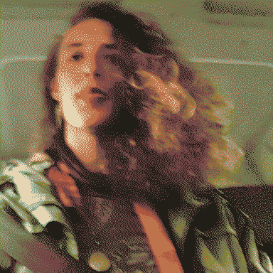

a seeker thrice cursed by dogstars’ tears

Scout’s a para-zoologist exploring alternate timelines of our solar system to catalogue how evolution turned out differently. It accidentally learnt how to step through uncanny reflective surfaces, jumping to slightly different permutations of evolutional history. In a lot of these ’verses [[otherverses]] it caught curses.
Scout’s first curse was amphibious, the second canine, the third medusozoan.
get frogged idiot
Scout started off on regular ol’ Earth as a batrachologist, but one day followed a particularly fucked up furry frog and fell into a puddle. On the other side of that puddle it found itself in a much wyrder planet, mostly dominated by swampy terrain and furry species. It had a lot of fun on this boggy boarplanet for a while, catching a curse that made it r/evolve like a wolverine frog - breakable bouncy bones and weird fur, hell yeah! They hopped through puddles to different planets of varying degrees of frogginess having a generally jolly time.

get dogged idiot
Scout spent a while jumping through magic mirrors in medieval Earths to find the doggiest planet it could, and settled in a pretty fantastic swords-and-sworcery furryland for a while. It hung out with a cool fox knight named Lumi (?) - they flew some kites together.
Scout got way too invested in local politics in this world’s kinda-Africa and ended being bitten by a hyena-like-guy and inherits his crazy curvy canine teeth and cute neck scruff. Hell yea, we can work with this, let’s go chase some moonstairs. With its newly heightened senses it was able to explore a nuanced variety of dogworlds. Whoops, it went too far and found dogs that have too many heads, time to jump in the ocean and get away from stinky mammals for a while.


get bugged idiot
A very warm oceanic Earth with a small population of angels spectating from papery dirigibles. Mostly immortal perfect blubberbeings! Scout has a fantastic good time here with a distractingly pretty jellyfish, and picked up a pretty gnarly curse.
Its flesh is gradually replaced with medusozoan blubber, and its bones are dissolving inside of it. Its brain can be seen through its now translucent skull.
A siphonophorae colony is feeding off its brain and displaying/interpreting its emotions in funky nonverbal ways. Its eye cavities become membranes for ‘speaking’ in wingdings/textmode or any symbols from its memory.
Its teeth have become displaced in the jelly - they chitter and glide from left to right like a waveform across its fused lips. Bones are going gelatinous but hey at least you’ve got a massive mouth with oscillating teeth in the rhythm of your speech.
By this stage the canine teeth have grown into its skull at funky angles like a babirusa - oni mask teeth that curve inwards and back out through the jelly as spiky eyebrow piercings.
So I was at first like actually I don’t mind being a frog then I was like o hell yea I’m a weird dog now and now I’m like trying to look on the bright side of being a jellyfish 🪼 like yea my bones r dissolving but I’ve got extra hearts
Now, more often than not, Scout finds itself wandering weird, life-lost beaches. It is crushlingly afraid of the big wave. It keeps encountering its imaginary friend ⁕𐑤𐑪𐑒𐑢𐑰 in different forms across time and space.
As this final curse leaves its ability to dimension-walk disintegrating, I guess Scout’s ended up on Mars pretty late in the game, on some level it’s seeking those lively red stars, same as everyone else.
if it wanders far enough it finds edges. on some edges it finds shores, where it catalogues what it finds. sometimes it finds a kite, and it tangles around its ankle and takes it to other shores. sometimes it finds nothing. it notices the weather sometimes.